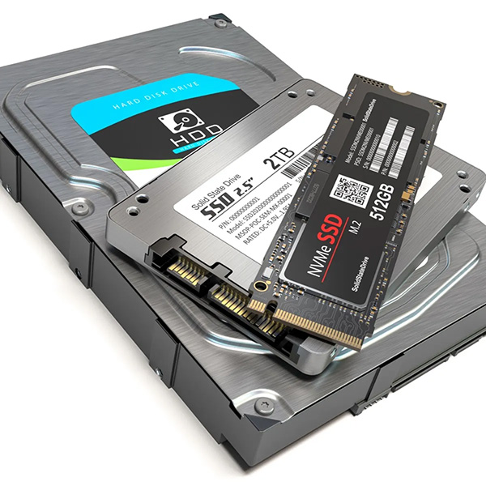

💾 Ổ cứng (HDD hoặc SSD)
Công dụng: Là nơi lưu trữ lâu dài toàn bộ dữ liệu: hệ điều hành, phần mềm, tài liệu, hình ảnh, video,...
Phân loại:
- HDD: Dung lượng lớn, giá rẻ, tốc độ chậm.
- SSD: Tốc độ cao, khởi động máy nhanh, giá cao hơn.
Vai trò chính:
- Cung cấp dữ liệu cho CPU và RAM khi cần.
- Giữ thông tin kể cả khi tắt máy.
